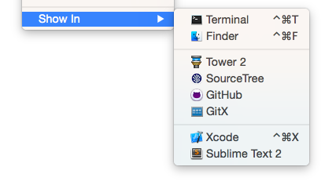

This “Beta 3” (v0.9.8) greatly improves the first-run experience so you can get started easier. Plus a slew of bugfixes and improvements.
Better first-run experience
- Illustrated benefits recap – in case you thought Gemba was “just” a Git app for designers ;-)
- Create a sample repository in your GitHub account with one click. It gently guides you to your first delivered asset, and lets you familiarize yourself with how Gemba works.
- Connect an existing repository from your GitHub account by choosing it from a list.
New features
- Performance! You should see some serious improvements in repositories with 1.000+ assets, both scrolling assets and switching repositories. (h/t Jenni, Flow)
- Connecting a bare local repository now treats it as a remote and clones it to a working copy. (h/t Flow)
- Gemba re-confirms with you before pushing anything to the remote repository.
- Open a repository in an external Git client or editor (Repository → Show In):

Bugfixes
- Asset folders now sorted alphabetically.
- Connecting a local repository while offline no longer shows an unnecessary error.
- Fixed asset filenames were sometimes truncated.
- Fixed problems with some SCP-style syntax repository URLs.
- Fixed Repository menu items being enabled even when the main window was not visible. (h/t Flow)
- Fixed acknowledgments formatting.
Changes
- Asset drop zone now lists accepted file extensions, as per the repository’s .gemba configuration file.
- Increased contrast on asset and configuration drop zones.
- “Universal 2x” now simply shown as “2x” in asset list.
- Configuration changes can now optionally be pushed to the remote repository later (with the first asset delivery).
- Asks for designer/developer role before starting free trial.
- Cleaned up Help menu.